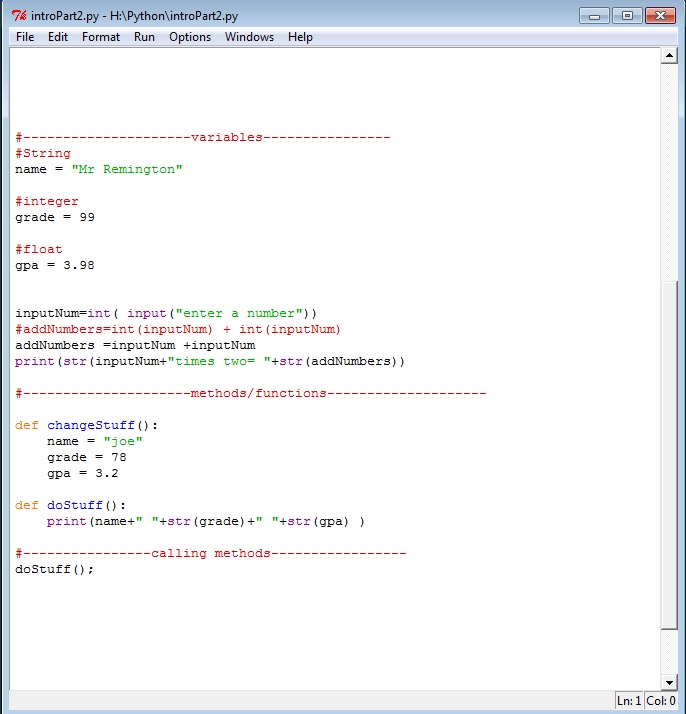
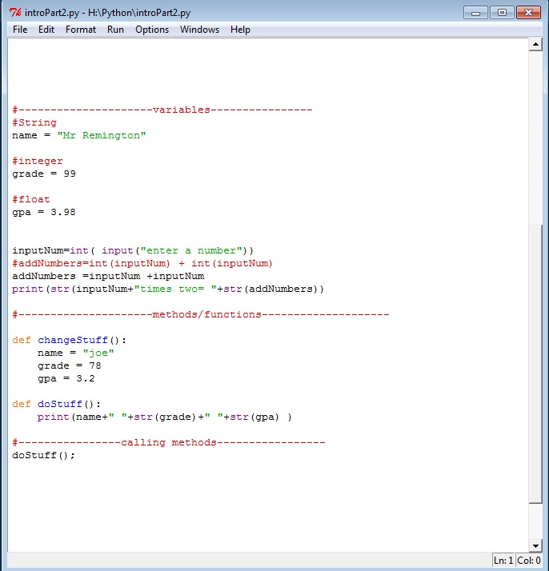
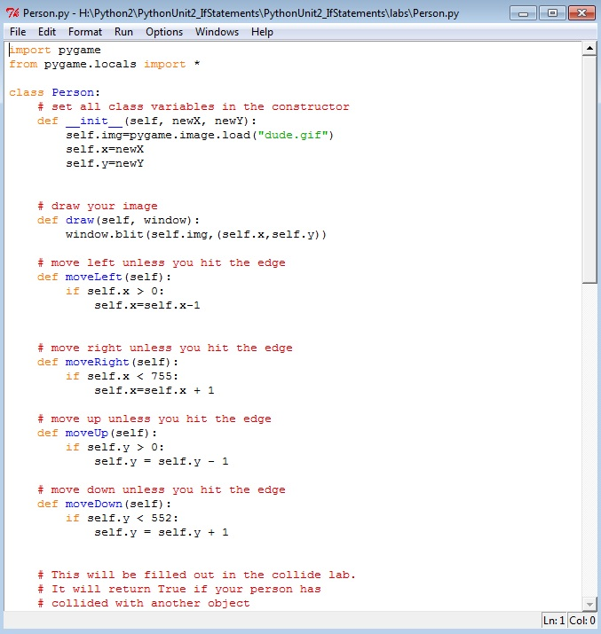

Python Content
 

Description:
During Python unit one we learned how to print statements as well as create code to find the different answers to numerical equations once you input numbers. We also learned to identify variables as well as set color, size, and name. In addition, we learned how to add to programs of coding to create a string.


Description:
During Python unit two we learned how to